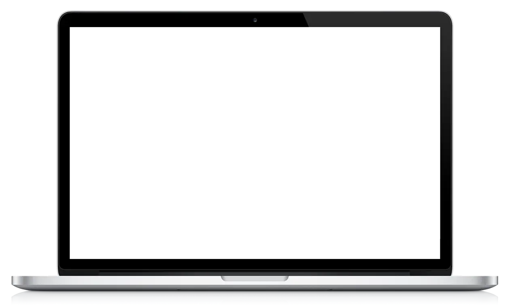
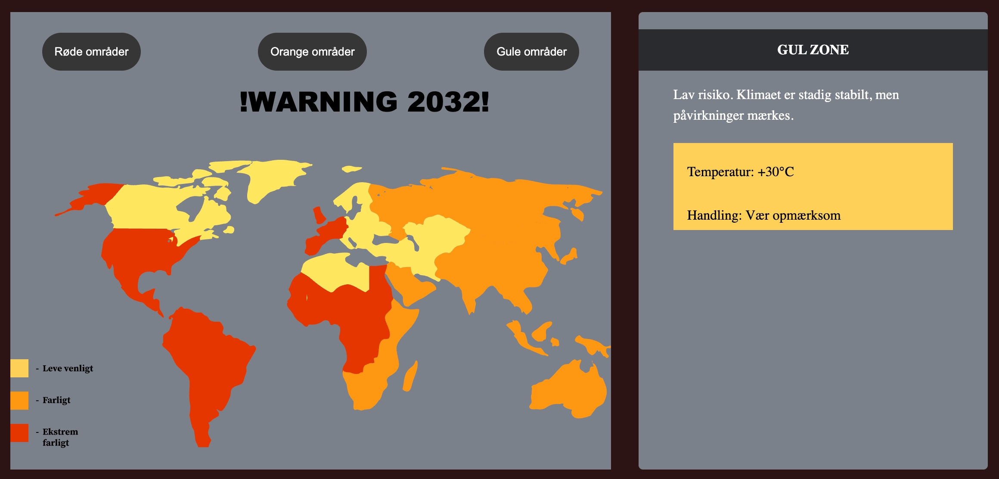
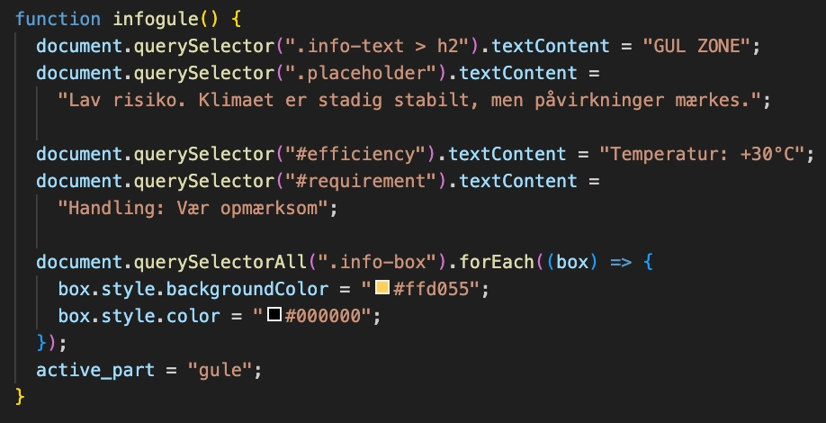
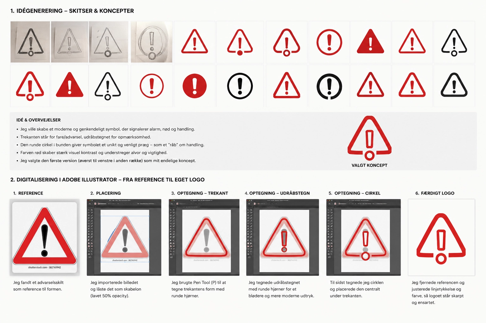

I Tema 4 arbejdede jeg med udvikling af brugergrænseflader gennem design og kodning. Her blev jeg introduceret til Adobe Illustrator, SVG-grafik, JavaScript og mere avancerede CSS-funktioner med fokus på at skabe interaktive og visuelle løsninger.

Emergencysite:
Den endelige løsning var et Emergency Site med temaet Global Opvarmning 2032. Formålet var at skabe et engagerende website, hvor brugeren kunne udforske konsekvenserne af global opvarmning gennem interaktive funktioner som infografik, nyhedsartikler og en klimarapporteringsformular.
Se projekt

Koden viser, hvordan jeg brugte JavaScript til at gøre SVG-infografikken interaktiv. Når brugeren klikker på en zone, opdateres indholdet i informationsboksen med ny tekst, temperatur og anbefalet handling. Samtidig ændres farven på zonen, så den passer til det valgte klimascenarie.
Proces:
Jeg startede med at udvikle det visuelle udtryk gennem style tile, wireframes og skitser. Herefter designede jeg logo og verdenskort i Illustrator samt udvalgte og producerede billeder, herunder AI-genereret indhold i Adobe Firefly, som understøttede temaet om global opvarmning.
En stor del af projektet handlede om at gøre sitet interaktivt. Jeg udviklede en SVG-infografik med klikbare zoner, hvor brugeren kunne læse om forskellige klimascenarier. Derudover lavede jeg en Breaking News-sektion med pop-up vinduer, som viste forskellige klimarelaterede nyheder.
Til sidst udviklede jeg en webformular, hvor brugeren kunne indrapportere observationer om klima og miljø. Undervejs arbejdede jeg med JavaScript til at skabe interaktive funktioner og dynamisk indhold samt CSS til layout og styling af sitet.

Hvad har jeg lært?
Tema 4 gav mig en bedre forståelse for, hvordan design og kode arbejder sammen. Det var mit første møde med JavaScript, og jeg lærte at skabe interaktive funktioner gennem blandt andet infografikken, formularen og de forskellige klikfunktioner på sitet. Derudover fik jeg erfaring med Illustrator og SVG-grafik, som var nye værktøjer for mig.